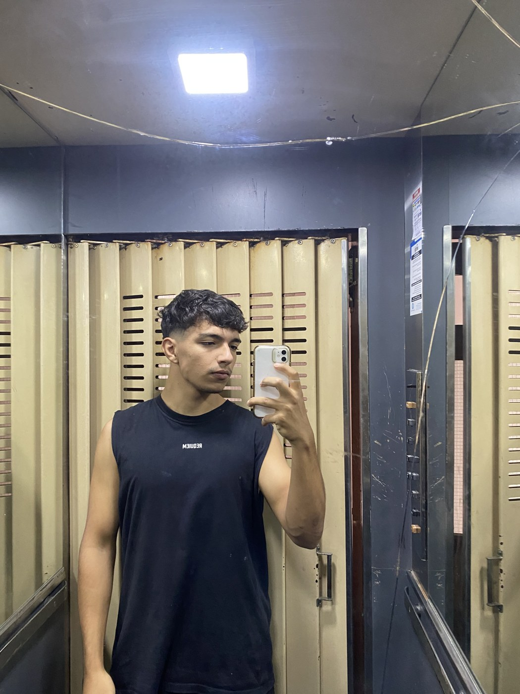

Bloqueás una jornada al mes para grabar y la cuenta te queda cargada todo el resto.
Vos ponés la cara y contestás los mensajes; de lo demás me encargo yo.
Sin depender de la publicidad, sin contrato que no puedas cortar, y sin que tengas que aprender a editar.
¿Esto me está pasando a mí?
Cuatro cosas que veo en casi todas las cuentas
Pasá el mouse por cada una.
Constancia
Publicás cuando te acordás
Tres videos en una semana, después veinte días en silencio. El algoritmo no premia el esfuerzo, premia la constancia.
El embudo
Tenés vistas y no tenés consultas
La pieza funciona, la gente mira, y ahí se termina. Falta el paso siguiente: qué hace el que quedó interesado.
El mensaje
Hablás de vos, no del que te va a llamar
"Somos líderes", "años de experiencia", "calidad y confianza". Nada de eso responde la pregunta que el otro tiene en la cabeza.
La marca
Se ve hecho a las apuradas
Sin criterio visual, cada pieza parece de una cuenta distinta. La marca no se construye: se diluye.
Bueno, ¿y vos qué hacés?
Me hago cargo de hasta el 90 % de tu marketing.
Del lado tuyo quedan dos cosas: poner la cara y contestar los mensajes.
Todo lo demás lo hago yo, de punta a punta y sin tercerizar.
Investigación
Antes de escribir una línea
Tu nicho, tu competencia directa, qué formatos ya funcionan en tu rubro y qué preguntas hace tu cliente antes de comprar.
Perfil
Que la cuenta esté lista para recibir
Bio, link, destacados y cómo se ve la grilla desde el celular de alguien que te acaba de descubrir.
Contenido
Formatos, ángulos y guiones
Pilares con su peso en la grilla, un banco de ángulos que dura meses, y cada pieza aprobada por vos antes de grabar.
Producción
Grabo, edito y publico yo
Una jornada de grabación al mes. Reels, carruseles e historias editados y publicados en la fecha acordada. No delego la pieza que después tengo que defender, y por eso lo que hablamos en la reunión es exactamente lo que se graba.
Automatización
Que no se pierda ninguna consulta
Respuestas automáticas a comentarios y a mensajes de madrugada o de un domingo. La consulta que espera tres días ya se fue a otro lado.
Web
Dónde recibir a la gente
Cuando hace falta, la página propia: rápida, hecha a medida y pensada para que la consulta llegue a WhatsApp en un solo salto. La del estudio Sergio Rosa la diseñé y la programé yo: la podés abrir acá. Y cuando suma, la pauta en Meta Ads también la armo y la manejo yo: anuncios que llevan directo a tu WhatsApp.
¿Pero sabés editar?
Así quedan las piezas cuando salen del editor.
Lo que se puede filmar se filma con un celular, en el mismo lugar donde trabaja el
cliente. Lo que no, se anima desde cero. No hace falta que te compres una cámara: lo
que cambia el resultado es lo que pasa después.
0:32
Falta el archivoassets/reels/alamos-recorrido.mp41080 × 1920
Quinta Los ÁlamosRecorrido a cámara, con subtítulos
0:29
Falta el archivoassets/reels/sr-en-san-pedro.mp41080 × 1920
Sergio Rosa y AsociadosA cámara en la calle, en San Pedro
0:24
Falta el archivoassets/reels/solmi-asociados-por-que.mp41080 × 1920
Solmi & AsociadosA cámara, con animaciones propias
Subtítulos quemados
Te miran en el colectivo, en la cola del banco, al lado de alguien durmiendo. Sin texto en pantalla sos un tipo moviendo la boca.
Cortado al hueso
Entre que terminás una frase y arrancás la otra hay medio segundo de nada. Ese medio segundo, diez veces, es gente que se fue.
Mismo color en todas
Una toma es a las once de la mañana y la otra a las seis de la tarde. En tu feed tienen que parecer del mismo día.
El primer segundo, aparte
Al arranque lo edito solo, en loop, veinte veces seguidas. Si no me frena a mí, no te va a frenar a un desconocido.
¿Le funcionó a alguien?
Tres rubros que no se parecen en nada. El mismo método.
Una quinta con dos cabañas, dos estudios de abogados y una empresa que impermeabiliza
techos desde 1889. Casi todos arrancaron con la cuenta parada o sin cuenta. Acá van
completos: lo que encontré, lo que entregué y, donde ya hay, lo que se midió.
Hospedaje · 2 cabañasAutorizado por el cliente
Quinta Los Álamos
Dos cabañas en un mismo predio, a 170 km de Capital.
Qué encontré
Cinco meses sin publicar y la última pieza con un like. Pero un reel de diciembre
había hecho 50.800 vistas y 14 consultas de precio. El problema no era el alcance,
era el embudo: sin link en la bio, un feed casi todo "disponibilidad", y en cinco
meses ni una reseña pedida.
Qué entregué
50ideas de reel en banco
40guiones escritos
5pilares de contenido
Más la auditoría del competidor directo del pueblo, dos
buyer personas con las objeciones ordenadas por fuerza, un formato repetible de 11
segundos calcado de sus dos mejores piezas, y el link directo a WhatsApp en la bio.
En dos meses logramos
+165consultas
+100.000vistas en TikTok
+300comentarios
Sin un peso de pauta. Un solo video de TikTok, «De a ocho»,
trajo 73 consultas.
Estudio jurídico · 30 añosAutorizado por el cliente
Sergio Rosa y Asociados
Treinta años en San Pedro, con sede en Capital.
Qué encontré
Una cuenta dormida: un solo reel publicado en toda su historia, y todo el trabajo
entrando por boca a boca. No faltaban ideas, faltaba todo lo anterior a las ideas.
Y es un rubro regulado: una cifra o un plazo mal puesto no es un error de marketing,
es un problema.
Qué entregué
50ángulos de video
25guiones escritos
48frames de stories
Más la investigación del nicho, el sistema visual completo
con plantillas propias de carrusel y stories, ocho formatos de video repetibles, los
destacados del perfil, y la web del estudio diseñada y programada de cero.
Lo que me llevé de acá: ninguna pieza sale con una cifra, un plazo o un dato
que el cliente no haya validado por escrito. Esa regla la aplico ahora en todos los
proyectos, sea el rubro que sea.
Impermeabilización · desde 1889
Solmi Impermeabilizantes
Impermeabilización elástica, sin molestias de obra. Seis generaciones de la misma familia en San Pedro.
Qué encontré
Una empresa familiar fundada en 1889 y sin ninguna presencia en redes. Trabajan para
industrias, hoteles y consorcios de todo el país, y nada de eso estaba a la vista del
que busca quién le arregle el techo.
Qué entregué
9carruseles diseñados
2videos animados
2públicos en Meta Ads
Más el sistema visual en azul y blanco, las historias y las
portadas de destacadas, y la campaña de Meta Ads armada y manejada por mí: casas en el
corredor Zárate–Villa Constitución y empresas de las provincias cercanas, cada anuncio
llevando directo al WhatsApp.
En menos de un mes
14consultas por Meta Ads
<1mes de campaña
Con un presupuesto acotado: la campaña salió el 1 de octubre.
Estudio jurídico
Solmi & Asociados
Estudio jurídico en San Pedro. El acuerdo antes que el juicio.
Qué encontré
Una cuenta con pocos seguidores y un dato que ordenó todo: el único comentario de su
historia era alguien que quería armar un fideicomiso —el servicio de más valor del
estudio— y había quedado sin respuesta. No faltaba alcance: faltaba sistema.
Qué entregué
55ángulos de video
13guiones para grabar
6animaciones de apoyo
Más la auditoría de la cuenta, el mensaje para recuperar esa
consulta, la bio, las historias y las destacadas, y un formulario para filtrar las
consultas antes de la primera reunión.
Rubro regulado, igual que el otro estudio: nada sale publicado sin que el
estudio valide cada dato.
Lugar disponible
El próximo podés ser vos.
Este lugar está vacío porque todavía no lo trabajé.
Por qué son cuatro
Son los clientes que tengo, y prefiero contarlos completos antes que mostrarte
una pared de logos que no significan nada. Cuando haya otro, va a estar acá con el
mismo nivel de detalle.
Cómo empieza
Me escribís, te mando el formulario y nos juntamos a mirar tu cuenta. Si te puedo
ayudar, te llevo una propuesta. Si no, te digo por dónde empezar y listo.
Preguntas concretas sobre tu negocio, tu cliente y lo que ya probaste. Te lleva quince minutos y me ahorra media reunión.
02
Nos reunimos
Miramos juntos tu cuenta y la de tu competencia. Si puedo ayudarte, te lo digo. Si no, también.
03
Te llevo la propuesta
Escrita, con el alcance y los entregables cerrados. Sin letra chica y sin "según el caso".
04
Fijamos el día de grabación
Una fecha del mes, bloqueada de antemano. Todo el contenido del mes sale de ahí.
05
Escribo los guiones y los revisás
Te llegan antes de la grabación. Nada se graba sin tu OK, y en rubros regulados nada sale con un dato que no hayas validado.
06
Grabamos
Una jornada. Llego con el guion, el orden de los planos y la lista de tomas. Repetimos las veces que haga falta.
07
Edito, publico y respondo
Las piezas salen en la fecha acordada. Contesto comentarios y mensajes, y a fin de mes te llega el reporte.
La cuenta es tuya
Yo la opero, no la poseo. Los accesos son tuyos desde el primer día y quedan tuyos el día que te vayas.
Nada de relleno
Si una pieza no sale de un pilar y no tiene un porqué, no se graba. Publicar por publicar no es constancia.
Reporte a fin de mes
Qué se publicó, qué funcionó, qué no, y qué cambia el mes que viene. Sin maquillaje.
Orgánico primero
No crecés porque pagaste: crecés porque el contenido se sostiene solo. Cuando la pauta suma —una cuenta que arranca de cero, una temporada, un servicio puntual— la armo y la manejo yo en Meta Ads. Nunca como reemplazo del contenido.
¿Yo entro en esto?
Trabajo con el que está decidido, no con el que quiere probar.
Prefiero decírtelo acá y no en la reunión. Esto funciona cuando el de enfrente está
metido de verdad; con el que quiere tantear un mes a ver qué pasa, no funciona para
ninguno de los dos.
Es para vos si…
Tenés un negocio que ya funciona y querés que más gente lo encuentre.
Podés bloquear una jornada al mes para grabar, y sostenerla.
Estás dispuesto a leer y aprobar los guiones antes de que se grabe nada.
Contestás los mensajes que entran. Es la mitad del resultado y no la puedo hacer yo.
Entendés que los primeros tres meses son de construcción, no de cosecha.
Querés delegar el marketing, no supervisarlo todos los días.
No es para vos si…
Querés probar un mes a ver qué pasa.
Esperás resultados en tres semanas.
No podés comprometer un día al mes para la grabación.
Buscás a alguien que suba posteos sin preguntar nada.
Querés que te garanticen números.
El precio es lo primero y lo único que vas a mirar.
¿Y qué me llega?
Todo lo que te entrego es un link.
Sin adjuntos que se pierden en el mail. La propuesta, los guiones y el reporte de cada
mes son páginas: las abrís desde el celular y se las reenviás a quien quieras. Estos son
los de clientes reales.
Antes de empezar
La propuesta
La auditoría de dónde está hoy tu negocio —redes, web, buscadores y competencia— y el
plan: qué canales abrir, en qué orden, qué publicar y cómo se mide.
Cuántas consultas entraron y de dónde, cuánto se tardó en contestar, qué pieza
funcionó y qué se hace el mes que viene. En una pantalla y sin maquillaje.
No siempre. Buena parte del contenido que mejor rinde no tiene a nadie hablando: un plano del lugar, del producto, de las manos trabajando. Cuando hace falta que aparezcas, llego con el guion escrito y grabamos las veces que sea necesario hasta que salga bien.
¿Cuánto tarda en verse algo?
Tres meses para tener con qué medir. En el primer mes vas a ver movimiento —más alcance, algunos comentarios—, pero sacar conclusiones a los veinte días es tirar una moneda. Por eso el sistema se arma pensado en tres meses y no en tres semanas.
¿Y si un video no funciona?
Va a pasar, y no es un problema: ninguna pieza garantiza nada por sí sola. Por eso se trabaja por tandas. Se mira qué pasó, se ajusta el gancho o el formato y se vuelve a intentar con lo aprendido. Cada pieza publicada deja información para la siguiente — eso es exactamente lo que no te deja publicar al azar.
¿Y si no tengo nada armado?
Mejor. Ese es justamente el trabajo. Casi todos mis clientes arrancaron con la cuenta parada o sin cuenta: la quinta llevaba cinco meses sin publicar, el estudio Sergio Rosa tenía un solo video en toda su historia y Solmi Impermeabilizantes no tenía redes. No hace falta que traigas nada más que el negocio funcionando.
¿Me garantizás resultados?
No, y desconfiá del que te los garantice. Lo que sí te garantizo es el trabajo: la investigación, el sistema escrito, las piezas producidas y la publicación en la fecha acordada. Los resultados dependen también de cosas que no manejo yo, empezando por que contestes los mensajes que entren.
¿Cuánto tiempo me lleva a mí?
Una jornada de grabación al mes, un rato antes para leer y aprobar los guiones, y contestar las consultas que entren. Nada más. Si te lleva más que eso, algo estoy haciendo mal.
¿Trabajás solo con Instagram?
Es el canal principal, pero el mismo sistema alimenta TikTok, la ficha de Google y los canales propios de tu rubro.
¿Hacés pauta paga?
Sí, en Meta Ads, y la armo y la manejo yo: los públicos, los anuncios y el seguimiento día por día, con cada anuncio llevando directo a tu WhatsApp. Pero el sistema no depende de la pauta para sostenerse: la base es orgánica, y la pauta entra cuando suma —una cuenta que arranca de cero, una temporada, un servicio que querés empujar—, no como reemplazo del contenido.
¿Trabajás con gente de afuera de San Pedro?
La jornada de grabación es presencial, así que trabajo en San Pedro y la zona. Si estás más lejos, escribíme igual y vemos: el sistema inicial se puede hacer a distancia.

¿Y vos quién sos?
Emanuel Seery
Llegué a esto de casualidad y me quedé por convicción. En marzo de 2025 me metí en un
curso de community manager sin saber bien qué esperar, y terminé haciendo también
publicidad avanzada y growth marketing hasta completar la licenciatura entera.
Lo que traigo no son veinte años de oficio: es método. Cada cliente
arranca con una investigación de su nicho y termina con un sistema escrito del que
sale cada pieza. Me interesa una sola métrica: las consultas que terminan en venta.
Seguidores y likes son lindos, pero no se depositan.
Formación
Community Manager, Publicidad Avanzada y Growth Marketing — Coderhouse (licenciatura completa).
Marketing Digital — UTN, cursando el segundo cuatrimestre.
Listo, ¿cómo empiezo?
Contame de tu negocio.
Me escribís, te mando el formulario y nos juntamos a mirar tu cuenta.
Si te puedo ayudar, te llevo una propuesta. Si no, te digo por dónde empezar
y listo. La charla no te cuesta nada en ninguno de los dos casos.